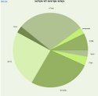
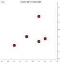

<span id="chartHide" style="position: absolute; left:16px; z-index:11; top:14px; font-weight:bold; display:none;"><a href="javascript:hideGraph()">גרף אחר</a></span>
<span id="chartTitle" style="position: absolute; left:auto; right:auto; z-index:10; top:12px; font-size:16px; width:100%; text-align:center; font-weight:bold; display:none;">נקודות אקדמיות לפי פקולטה</span>
  <div style="width:100%; height:100%; direction:ltr; display:none;" id="chartMain"></div>
  
<div style="text-align:center; " id="chratMenu">
  <div style="margin:15px; width:130px; display:inline-block;"><a href="javascript:void(0)" onClick="showGraph(PlotPointsPerFaculty);">נקודות אקדמיות לפי פקולטה<br /></a></div>
  <div style="margin:15px; width:130px; display:inline-block;"><a href="javascript:void(0)" onClick="showGraph(PlotAverageToPoints);">ממוצע סמסטריאלי לפי מספר נק'<br /></a></div>
</div>

